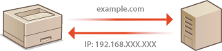
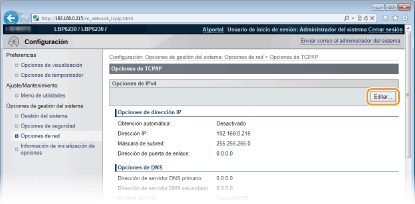
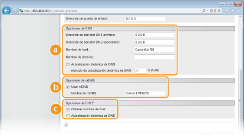
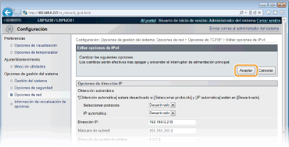
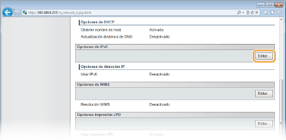
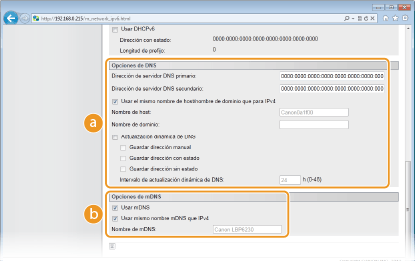
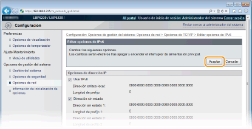

0KXF-02C
DNS (Sistema de nombres de dominio) ofrece un servicio de resolución de nombres que asocia un nombre de host (o dominio) con una dirección IP. Configure las opciones de DNS, mDNS o DHCP en función de su red. Tenga en cuenta que los procedimientos para configurar DNS difieren de los de IPv4 e IPv6.

1
Inicie el IU remoto e inicie sesión en modo Administrador del Sistema. Inicio del IU remoto
2
Haga clic en [Configuración].

3
Haga clic en [Opciones de red]  [Opciones de TCP/IP].
[Opciones de TCP/IP].

4
Configure las opciones de DNS.
 Configuración de las opciones de DNS IPv4
Configuración de las opciones de DNS IPv4|
1
|
Haga clic en [Editar] en [Opciones de IPv4].
 |
|
2
|
Configure las opciones de DNS IPv4.
  [Opciones de DNS] [Opciones de DNS][Dirección de servidor DNS primario]
Introduzca la dirección IP del servidor DNS. [Dirección de servidor DNS secundario]
Si existe un servidor DNS secundario, introduzca su dirección IP. [Nombre de host]
Introduzca hasta 47 caracteres alfanuméricos en el nombre de host del equipo que vaya a registrar con el servidor DNS. [Nombre de dominio]
Introduzca hasta 47 caracteres alfanuméricos en el nombre del dominio al que pertenezca el equipo (como "ejemplo.com"). [Actualización dinámica de DNS]
Marque la casilla de verificación para actualizar automáticamente los registros DNS cuando cambie la asociación entre la dirección IP del equipo y su nombre de host (por ejemplo, en un entorno DHCP). Para especificar el intervalo entre actualizaciones, introduzca el tiempo en horas en el cuadro de texto [Intervalo de actualización dinámica de DNS]. Desmarque la casilla de verificación si no desea utilizar una actualización dinámica.  [Opciones de mDNS] [Opciones de mDNS][Usar mDNS]
Adoptado por servicios como Bonjour, mDNS (DNS multidifusión) es un protocolo para asociar un nombre de host con una dirección IP sin utilizar DNS. Marque la casilla de verificación para activar mDNS e introduzca el nombre de mDNS en el cuadro de texto [Nombre de mDNS]. Desmarque la casilla de verificación si no desea utilizar mDNS.  [Opciones de DHCP] [Opciones de DHCP][Obtener nombre de host]
Marque la casilla de verificación para activar la Opción 12 y obtener el nombre de host del servidor DHCP. Desmárquela si no desea utilizar esta función. [Actualización dinámica de DNS]
Marque la casilla de verificación para activar la Opción 81 y actualizar dinámicamente los registros DNS a través del servidor DHCP en lugar de hacerlo a través de este equipo. Desmárquela si no desea utilizar esta función. |
|
3
|
Haga clic en [Aceptar].
 |
Configuración de las opciones de DNS IPv6|
1
|
Haga clic en [Editar] en [Opciones de IPv6].
 |
|
2
|
Configure las opciones de DNS IPv6.
Debe seleccionarse la casilla de verificación [Usar IPv6] para configurar las opciones. Configuración de direcciones IPv6
 [Opciones de DNS][Dirección de servidor DNS primario]
Introduzca la dirección IP del servidor DNS. No es posible introducir direcciones que comienzan por "ff" (direcciones multidifusión) ni la dirección de bucle (::1). [Dirección de servidor DNS secundario]
Si existe un servidor DNS secundario, introduzca su dirección IP. No es posible introducir direcciones que comienzan por "ff" (direcciones multidifusión) ni la dirección de bucle (::1). [Usar el mismo nombre de host/nombre de dominio que para IPv4]
Marque la casilla de verificación para utilizar las mismas opciones que en IPv4. El nombre de host y el nombre de dominio que se utilizan en IPv4 se establecerán automáticamente cuando se reinicie el equipo. Desmarque la casilla de verificación si desea utilizar opciones distintas a las de IPv4. [Nombre de host]
Introduzca hasta 47 caracteres alfanuméricos en el nombre de host del equipo que vaya a registrar con el servidor DNS. [Nombre de dominio]
Introduzca hasta 47 caracteres alfanuméricos en el nombre del dominio al que pertenezca el equipo (como "ejemplo.com"). [Actualización dinámica de DNS]
Seleccione la casilla de verificación para actualizar automáticamente los registros DNS cuando cambie la asociación entre la dirección IP del equipo y su nombre de host (por ejemplo, en un entorno DHCP). Para especificar las direcciones que desea registrar con el servidor DNS, seleccione una o varias casillas de verificación para [Guardar dirección manual], [Guardar dirección con estado] y [Guardar dirección sin estado]. Para especificar el intervalo entre actualizaciones, introduzca el tiempo en horas en el cuadro de texto [Intervalo de actualización dinámica de DNS]. Desmarque la casilla de verificación si no desea utilizar una actualización dinámica. [Opciones de mDNS][Usar mDNS]
Adoptado por servicios como Bonjour, mDNS (DNS multidifusión) es un protocolo para asociar un nombre de host con una dirección IP sin utilizar DNS. Seleccione la casilla de verificación para activar mDNS. Desmárquela si no desea utilizar mDNS. [Usar mismo nombre mDNS que IPv4]
Marque la casilla de verificación para utilizar las mismas opciones que en IPv4. El nombre de mDNS que se utiliza en IPv4 se establecerá automáticamente cuando se reinicie el equipo. Desmarque la casilla de verificación e introduzca un nombre en [Nombre de mDNS] si desea utilizar opciones distintas a las de IPv4. |
|
3
|
Haga clic en [Aceptar].
 |
5
Reinicie el equipo.
Apague el equipo, espere al menos 10 segundos y vuelva a encenderlo.